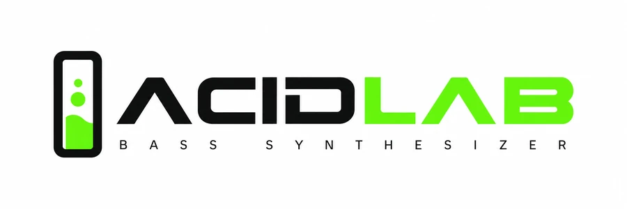

Control
Transport
MIDI
OFF
Tempo
130
BPM
Pattern
Voice
VCF — Filter
Cutoff
600Hz
Resonance
0.75
Env Mod
0.70
Decay
0.20s
VCA — Amp
Accent
0.75
Drive
Distort
0.00
Main outLIVE
NO SIGNAL
VCOSAW
VCFLP 18
Pattern preset
Classic Acid
Bank01/06
Res1/16
Steps16
Freq
620Hz
Res
0.55
Env
0.50
Dec
0.32s
Acc
0.50
Master
Output Level
1086420
Volume
0.80
Sequencer
Step --/16
Gate 00
Pat 01
Accent
Slide
Res 1/16
Tasto = gate · marker = accent / slide
Sequencer Controls
Scale
STEP 01/16 · PAT 01 · BPM 125
Piano Roll — Pattern 01
DELAY
Stereo · BBD echo
Mix0%
Time375ms
Fdbk28%
Time
375ms
Mix
0%
Fdbk
28%
InputEcho bus
REVERB
Convolution hall
Mix0%
Size35%
Damp50%
Size
35%
Mix
0%
Damp
50%
SendHall out
DISTORTION
tanh drive · DC block
Drive5%
Tone50%
Level50%
Tone
50%
Drive
5%
Level
50%
Pre filterDrive out
CHORUS
BBD · 2-voice
Mix0%
Rate30%
Depth40%
Rate
30%
Mix
0%
Depth
40%
Mono inStereo out
Factory Pattern Preset
Tempo
130 BPM
Waveform
SAW
Cutoff
600Hz
Resonance
0.75
Pattern preview
16 step
■ gate
■ accent
▸ slide
Synth Preset
TimbroClassic Acid 303
EngineACID VCO
Filter18 dB LP
ScopeSYNTH ONLY
Actions
Selected
Classic Acid
Factory Pattern
Ready
User Library
Local memory
0 PATTERNS
Tempo
125
BPM
Clicca il numero e digita · Invio
−
+
TAP TEMPO
Playback Mode
FILTER
VCF attivo
NOTE
VCF bypass
MIDI IN
Pattern transpose
Feel
SHUFFLE
0%
ACCENT AMT
75%
Swing sposta gli step pari · Accent regola la spinta
Audio Engine
Audio · premi PLAY
EngineTB-303 DSP
VCFHuovilainen ladder
VCOPolyBLEP saw/sqr
OutputStereo
L'audio parte al primo PLAY (gesto utente)
Keyboard — Pattern Transpose
In MIDI mode (toggle nel SEQUENCER) la nota non suona da sola: diventa la root del pattern. Tieni premuto e la bassline gira in quella tonalità — A = C3, il pattern come è scritto:
AC
WC#
SD
ED#
DE
FF
TF#
GG
YG#
HA
UA#
JB
KC
1
Premi un tasto — il pattern riparte dallo step 1 nella tonalità di quella nota.
2
Tieni e premi un secondo tasto — ritraspone a tempo senza ripartire da capo: è il legato del piano roll.
3
Rilascia tutto — il sequencer si ferma. Priorità all'ultimo tasto premuto.
About

VERSION 1.1.0
Clone software del Roland TB-303.
DSP C++/JUCE · UI WebView HTML.
Engine WebAudio nel browser.
Eugenio Bellini — NABA UI/UX 2026
DSP C++/JUCE · UI WebView HTML.
Engine WebAudio nel browser.
Eugenio Bellini — NABA UI/UX 2026